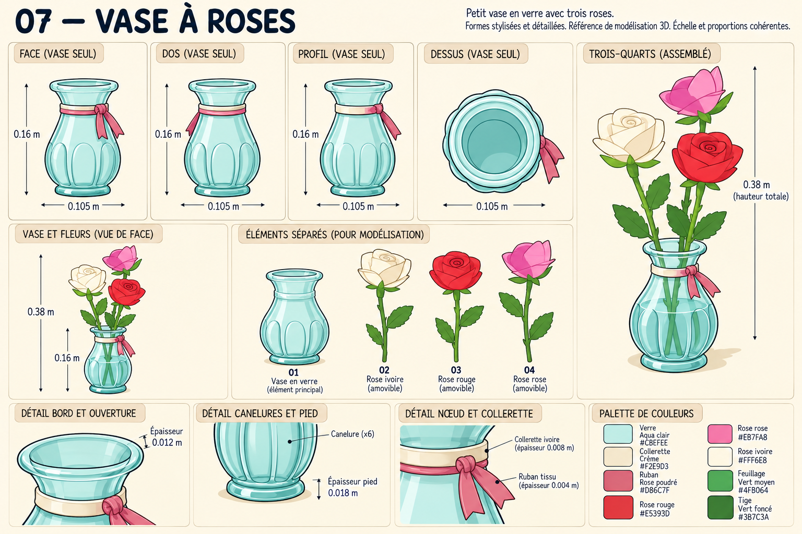
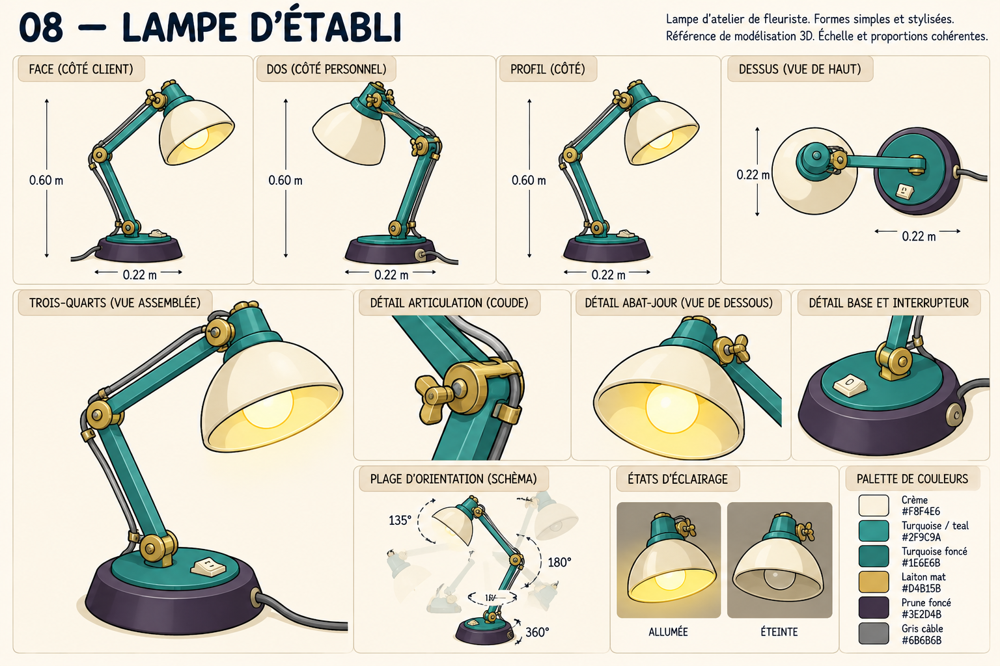
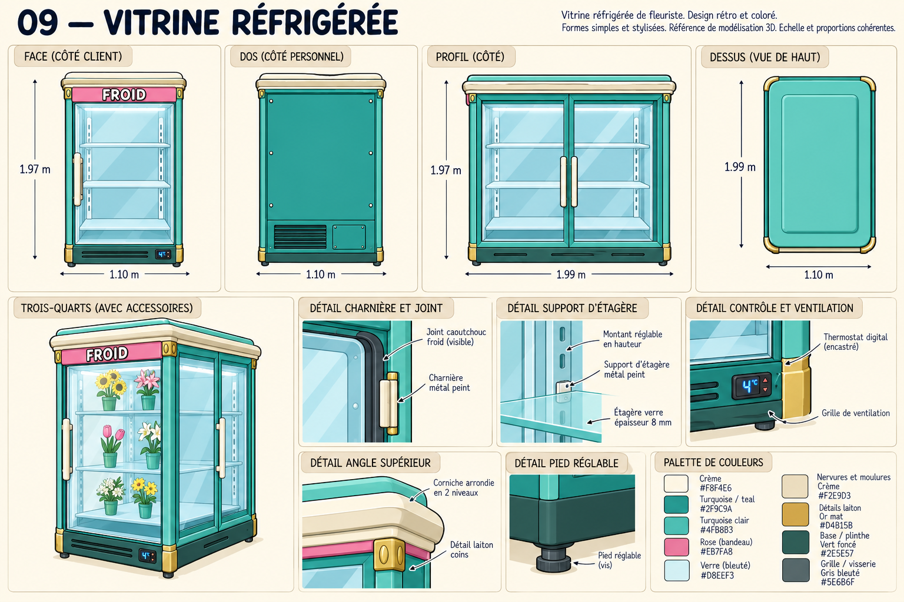
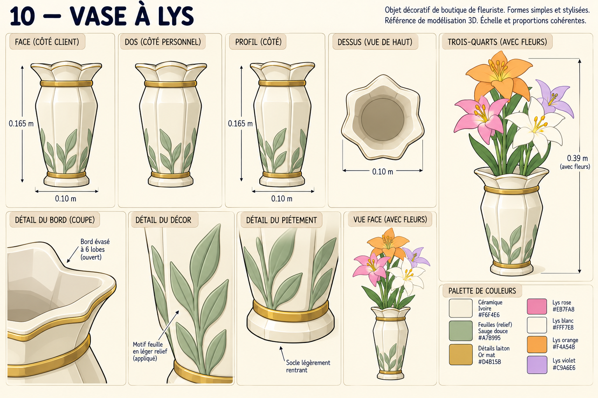
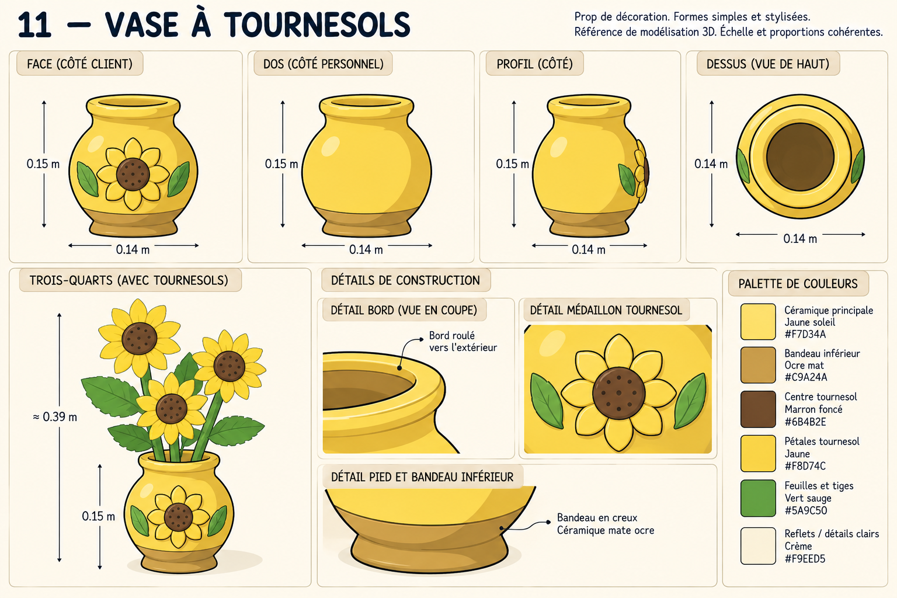
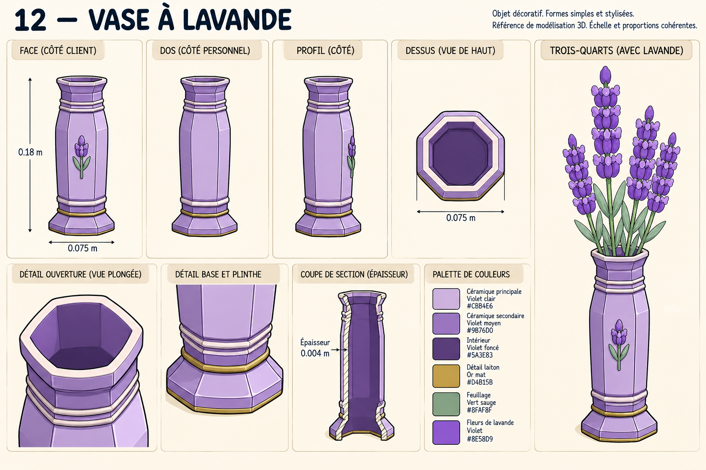
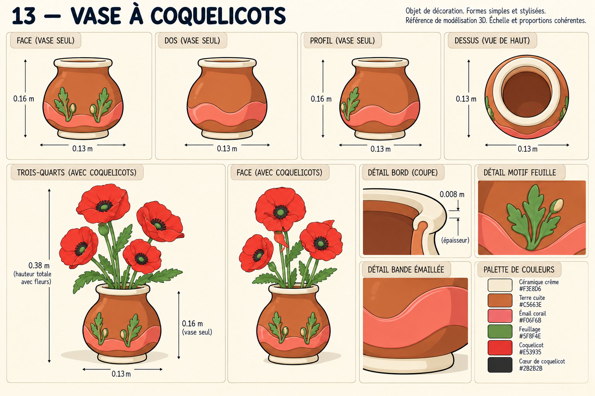

Sept designs retravaillés dans le style cartoon du mobilier validé. Chaque planche comporte des vues complémentaires, des détails de construction et une palette. Les vases sont montrés seuls et fleuris pour préparer des modèles séparés. Ces propositions dessinées avec imagegen ne modifient pas encore les modèles du jeu.
Télécharger les sept planches et les prompts · Planches 01 à 06






